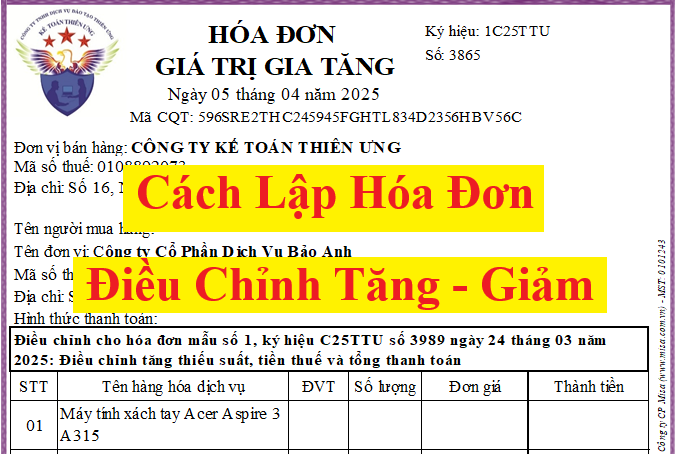
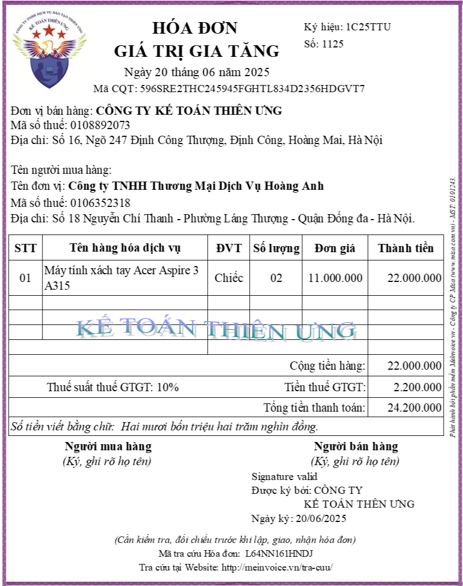
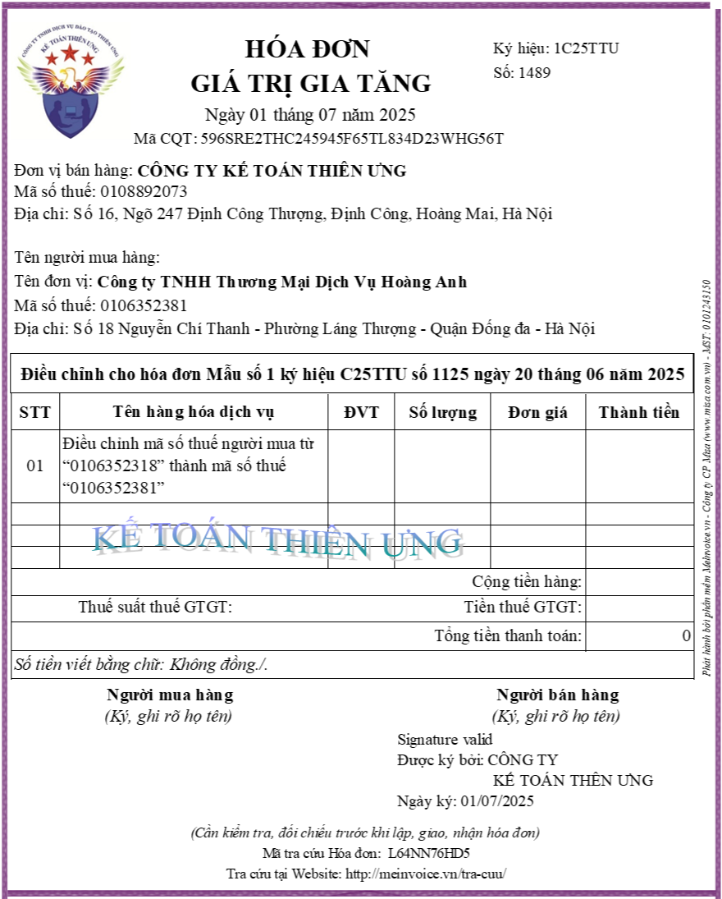
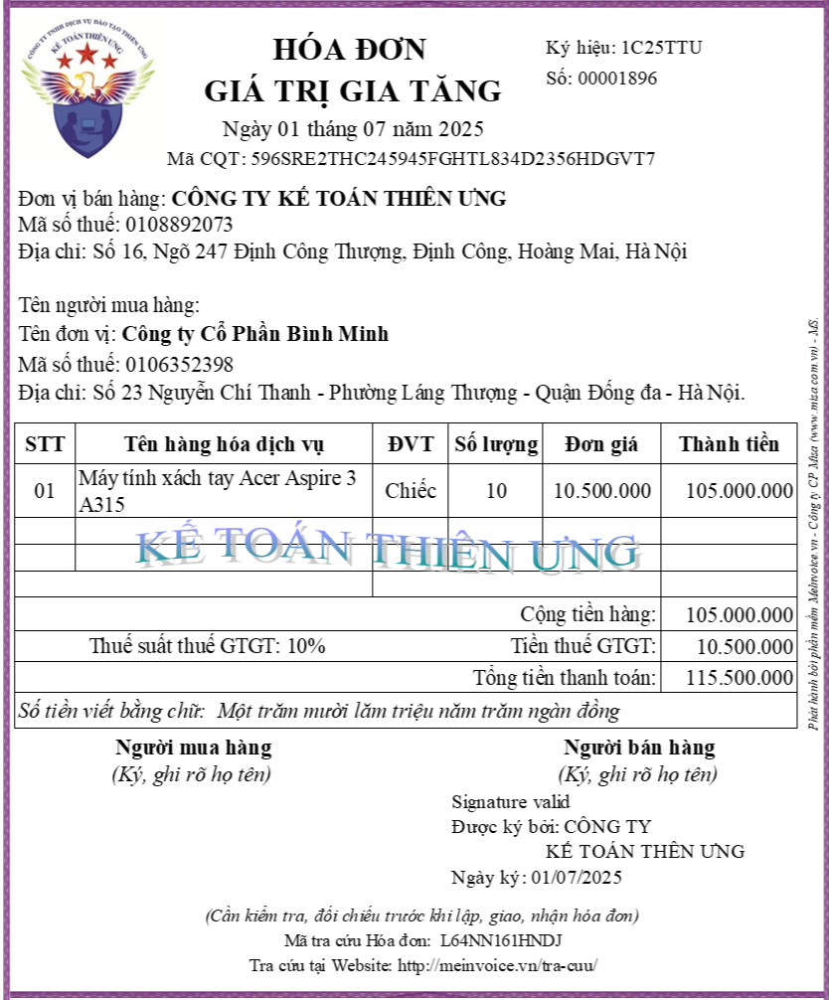
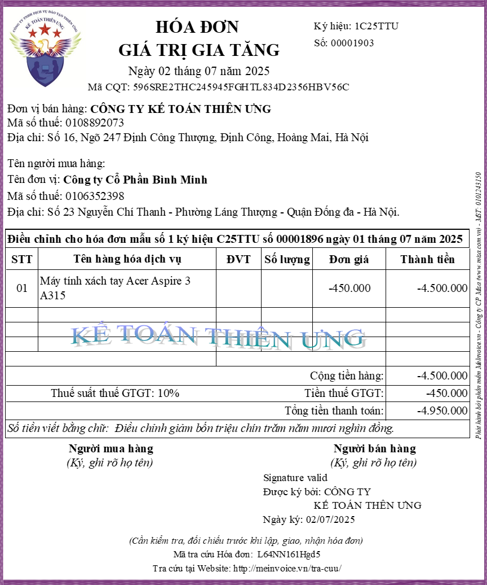
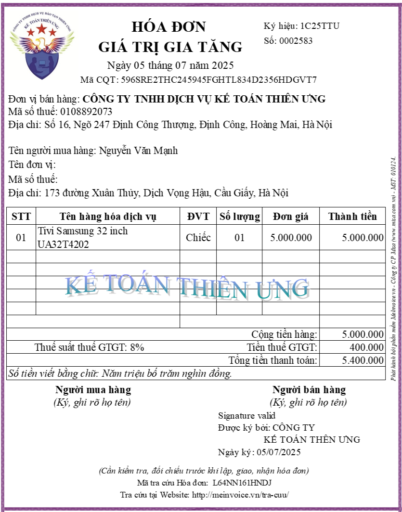
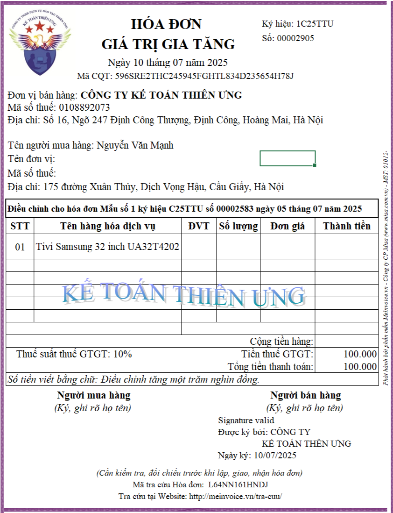
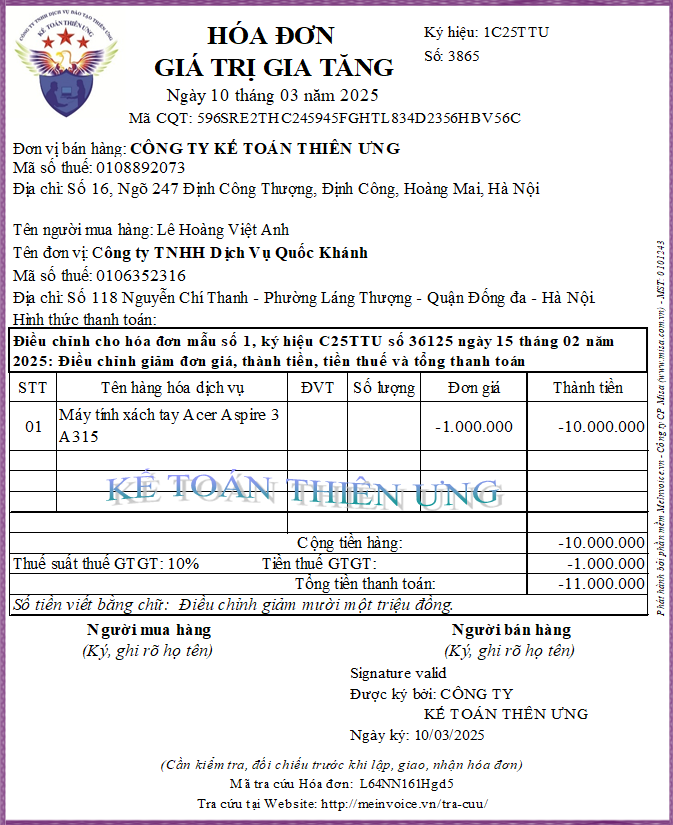
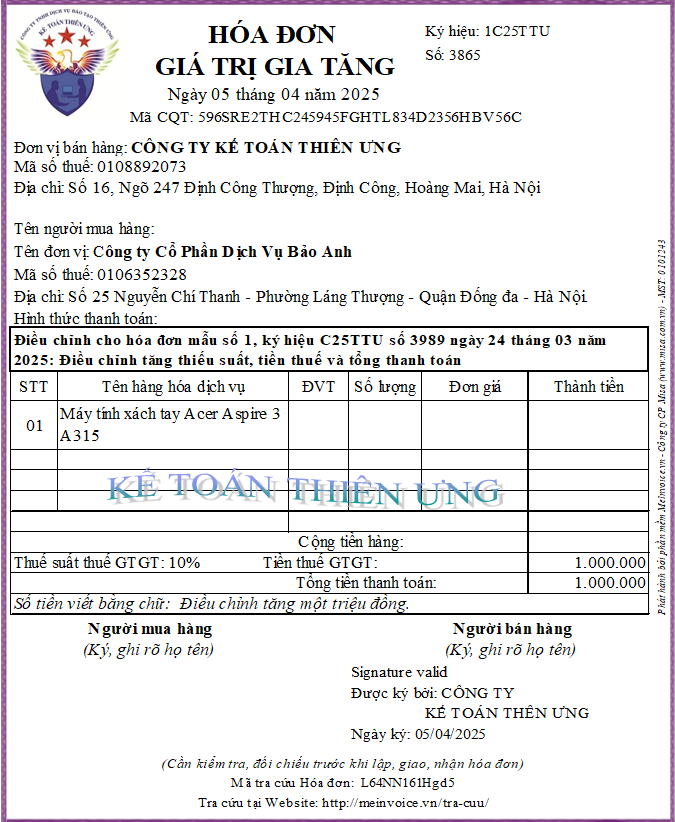
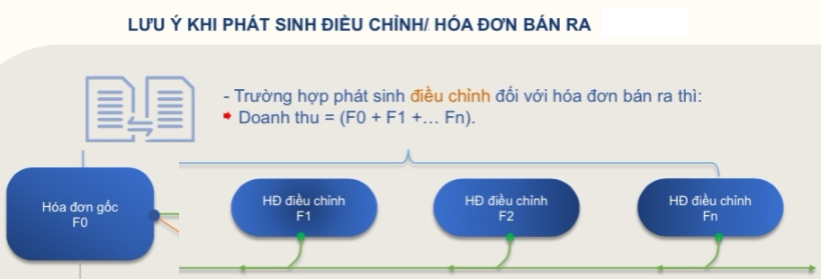

Hướng dẫn cách lập hóa đơn điều chỉnh tăng, hóa đơn điều chỉnh giảm theo quy định mới nhất năm 2025 tại Nghị định 70/2025/NĐ-CP và thông tư 32/2025/TT-BTC
I. Căn cứ hướng dẫn cách lập hóa đơn điều chỉnh:
1. Trước ngày 01/06/2025, thực hiện lập hóa đơn điều chỉnh theo quy định tại:
2. Còn từ ngày 01/06/2025 trở đi, thực hiện lập hóa đơn điều chỉnh theo quy định tại: Khoản 13 Điều 1 Nghị định 70/2025/NĐ-CP sửa đổi Nghị định 123/2020/NĐ-CP ngày 19/10/2020 quy định về hóa đơn, chứng từ (Nghị định 70/2025/NĐ-CP ban hành ngày 20/03/2025, có hiệu lực từ ngày 01/06/2025)
Chi tiết cách lập hóa đơn điều chỉnh ở từng giai đoạn như sau:
1. Khi nào thì lập hóa đơn điều chỉnh? Hóa đơn điều chỉnh sử dụng trong những trường hợp nào?
Theo Khoản 13 Điều 1 Nghị định 70/2025/NĐ-CP Sửa đổi tên Điều 19 và sửa đổi, bổ sung Điều 19 của Nghị định số 123/2020/NĐ-CP thì hóa đơn điều chỉnh sẽ được sử dụng trong các trường hợp như:
Trường hợp 2: Thực hiện chiết khấu thương mại:
Còn dưới đây, Công ty đào tạo Kế Toán Diệu Tâm sẽ hướng dẫn các bạn thực hiện lập hóa đơn điều chỉnh trong trường hợp số 1 - Điều chỉnh hóa đơn điện tử đã lập sai:
Thực hiện theo quy định tại Khoản 13 Điều 1 Nghị định 70/2025/NĐ-CP sửa đổi, bổ sung Điều 19 của Nghị định số 123/2020/NĐ-CP có hiệu lực từ ngày 01/06/2025:
2.1. Điều chỉnh hóa đơn điện tử sai mã số thuế người mua:
Tình huống: Ngày 20/06/2025, Công ty Kế Toán Diệu Tâm ký hợp đồng bán điều hòa cho Công ty Hoàng Anh
Khi bàn giao hàng hóa, Công ty Kế Toán Diệu Tâm đã xuất hóa đơn điện tử số 1125 cho Công ty Hoàng Anh như sau:
- Đến ngày 01/07/2025, Công ty Hoàng Anh phát hiện ra hóa đơn điện tử số 1125 bị sai mã số thuế của của người mua
Bên bán và bên mua thống nhất xử lý hóa đơn điện tử số 1125 đã lập sai như sau:
Vì hóa đơn điện tử lập sai số 1125 đã được cấp mã của cơ quan thuế Và lỗi sai của hóa đơn là sai mã số thuế người mua
Nên phải thực hiện xử lý hóa đơn điện tử lập sai số 1125 theo quy định tại Khoản 13 Điều 1 Nghị định 70/2025/NĐ-CP là bằng 1 trong 2 cách: lập hóa đơn điều chỉnh hoặc lập hóa đơn mới thay thế.
Cụ thể các bước thực hiện điều chỉnh hóa đơn như sau:
Bước 1: Người bán và người mua lập văn bản thỏa thuận điều chỉnh hóa đơn điện tử lập sai:
Bước 2: Người bán lập hóa đơn điện tử điều chỉnh hóa đơn đã lập có sai sót => Rồi ký phát hành để gửi cho CQT cấp mã => Rồi gửi hóa đơn điều chỉnh cho người mua như sau:
Khi lập hóa đơn điều chỉnh bên bán cần thực hiện ghi các thông tin lên hóa đơn điều chỉnh như sau:
Xử lý sai sót của hóa đơn điện tử số 00001896 như sau:
1. Trước ngày 01/06/2025, thực hiện lập hóa đơn điều chỉnh theo quy định tại:

Điều 19 của Nghị định số 123/2020/NĐ-CP và hướng dẫn tại Khoản 1 Điều 7 Thông tư 78/2021/TT-BTC2. Còn từ ngày 01/06/2025 trở đi, thực hiện lập hóa đơn điều chỉnh theo quy định tại: Khoản 13 Điều 1 Nghị định 70/2025/NĐ-CP sửa đổi Nghị định 123/2020/NĐ-CP ngày 19/10/2020 quy định về hóa đơn, chứng từ (Nghị định 70/2025/NĐ-CP ban hành ngày 20/03/2025, có hiệu lực từ ngày 01/06/2025)
Chi tiết cách lập hóa đơn điều chỉnh ở từng giai đoạn như sau:
II. Cách lập hóa đơn điều chỉnh theo Nghị định 70/2025/NĐ-CP (áp dụng cho giai đoạn từ ngày 01/06/2025 trở đi)
1. Khi nào thì lập hóa đơn điều chỉnh? Hóa đơn điều chỉnh sử dụng trong những trường hợp nào?
Theo Khoản 13 Điều 1 Nghị định 70/2025/NĐ-CP Sửa đổi tên Điều 19 và sửa đổi, bổ sung Điều 19 của Nghị định số 123/2020/NĐ-CP thì hóa đơn điều chỉnh sẽ được sử dụng trong các trường hợp như:
Trường hợp 1: Xử lý hóa đơn điện tử đã lập sai
Trường hợp có sai: mã số thuế; sai về số tiền ghi trên hóa đơn, sai về thuế suất, tiền thuế hoặc hàng hóa ghi trên hóa đơn không đúng quy cách, chất lượng thì có thể lựa chọn hóa đơn điều chỉnh để xử lý hóa đơn điện tử lập sai
Trường hợp 2: Thực hiện chiết khấu thương mại:
Trường hợp việc chiết khấu thương mại căn cứ vào số lượng, doanh số hàng hóa, dịch vụ thì số tiền chiết khấu của hàng hóa, dịch vụ đã bán được tính điều chỉnh trên hóa đơn bán hàng hóa, cung cấp dịch vụ của lần mua cuối cùng hoặc kỳ tiếp sau đảm bảo số tiền chiết khấu không vượt quá giá trị hàng hóa, dịch vụ ghi trên hóa đơn của lần mua cuối cùng hoặc kỳ tiếp sau hoặc được lập hóa đơn điều chỉnh kèm theo bảng kê các số hóa đơn cần điều chỉnh, số tiền, tiền thuế điều chỉnh. Bảng kê được lưu tại đơn vị và xuất trình khi cơ quan thuế hoặc cơ quan nhà nước có thẩm quyền yêu cầu. Căn cứ vào hóa đơn điều chỉnh, bên bán và bên mua kê khai điều chỉnh doanh thu mua, bán, thuế đầu ra, đầu vào tại kỳ lập hóa đơn điều chỉnh.
Công ty đào tạo Kế Toán Diệu Tâm mời các bạn xem chi tiết tại đây:
Cách lập hóa đơn chiết khấu thương mại theo Nghị định 70 2025
Công ty đào tạo Kế Toán Diệu Tâm mời các bạn xem chi tiết tại đây:
Cách lập hóa đơn chiết khấu thương mại theo Nghị định 70 2025
Trường hợp 3: Xử lý trả lại hàng hoá, dịch vụ:
Trường hợp trả lại hàng hóa: Trường hợp người mua trả lại toàn bộ hoặc một phần hàng hóa (bao gồm cả trường hợp đổi hàng làm thay đổi giá trị của hàng hóa đã mua) thì người bán lập hóa đơn điều chỉnh, trừ trường hợp các bên có thỏa thuận về việc người mua lập hóa đơn khi trả lại hàng hóa thì người mua lập hóa đơn điện tử giao cho người bán; người bán, người mua thực hiện nghĩa vụ thuế theo quy định khi bán hàng hóa.
Chi tiết và đầy đủ hơn về cách Xử lý hóa đơn điện tử trong trường hợp trả lại hàng hoá, dịch vụ thì công ty đào tạo Kế Toán Diệu Tâm mời các bạn xem tại đây:
Cách lập hóa đơn hàng bán trả lại theo Nghị định 70 2025
Cách lập hóa đơn hàng bán trả lại theo Nghị định 70 2025
Còn dưới đây, Công ty đào tạo Kế Toán Diệu Tâm sẽ hướng dẫn các bạn thực hiện lập hóa đơn điều chỉnh trong trường hợp số 1 - Điều chỉnh hóa đơn điện tử đã lập sai:
Thực hiện theo quy định tại Khoản 13 Điều 1 Nghị định 70/2025/NĐ-CP sửa đổi, bổ sung Điều 19 của Nghị định số 123/2020/NĐ-CP có hiệu lực từ ngày 01/06/2025:
Trường hợp người bán lựa chọn lập hóa đơn điện tử điều chỉnh hóa đơn đã lập sai thì lập hóa đơn điều chỉnh như sau:
+ Trên hóa đơn điện tử điều chỉnh hóa đơn điện tử đã lập sai phải có dòng chữ “Điều chỉnh cho hóa đơn Mẫu số... ký hiệu... số... ngày... tháng... năm”.
+ Đối với nội dung về giá trị trên hóa đơn điều chỉnh thì: điều chỉnh tăng (ghi dấu dương), điều chỉnh giảm (ghi dấu âm) đúng với thực tế điều chỉnh
Nếu sai 1 chỉ tiêu nào đó mà dẫn đến sai các chỉ tiêu khác thì thực hiện điều chỉnh cả những chỉ tiêu bị sai liên đới đó
+ Đối với nội dung về giá trị trên hóa đơn điều chỉnh thì: điều chỉnh tăng (ghi dấu dương), điều chỉnh giảm (ghi dấu âm) đúng với thực tế điều chỉnh
+ Nếu sai cao hơn thì lập hóa đơn điều chỉnh giảm
Ví dụ: đơn giá đúng là: 2.000.000 nhưng ghi sai thành 3.000.000
=> Phải lập hóa đơn điều chỉnh giảm => Khi lập hóa đơn điều chỉnh tại cột đơn giá sẽ ghi phần chênh lệch là: -1.000.000 (Điều chỉnh giảm sẽ ghi dấu âm: 2.000.000 – 3.000.000 = -1.000.000)
+ Nếu sai thấp hơn thì lập hóa đơn điều chỉnh tăng
Ví dụ: Tiền thuế đúng là: 1.100.000 nhưng ghi sai thành 1.000.000
=> Phải lập hóa đơn điều chỉnh tăng => Khi lập hóa đơn điều chỉnh tại cột tiền thuế sẽ ghi phần chênh lệch là: 1.100.000 - 1.000.000 = 100.000 (Điều chỉnh tăng sẽ ghi dấu dương: 1.100.000 - 1.000.000 = 100.000)
Nếu sai 1 chỉ tiêu nào đó mà dẫn đến sai các chỉ tiêu khác thì thực hiện điều chỉnh cả những chỉ tiêu bị sai liên đới đó
Ví dụ: Sai thuế suất thuế GTGT dẫn tới sai cả tiền thuế GTGT và tổng thanh toán thì khi điều chỉnh hóa đơn sẽ thực hiện điều chỉnh cả thuế suất, tiền thuế và tổng thanh toán
Sau khi lập xong hóa đơn điều chỉnh thì: Người bán ký số trên hóa đơn điện tử mới điều chỉnh => sau đó người bán gửi cho người mua (đối với trường hợp sử dụng hóa đơn điện tử không có mã của cơ quan thuế) hoặc gửi cơ quan thuế để cơ quan thuế cấp mã cho hóa đơn điện tử mới để gửi cho người mua (đối với trường hợp sử dụng hóa đơn điện tử có mã của cơ quan thuế).
Đặc biệt lưu ý: Trước khi lập hóa đơn điều chỉnh thì phải lập biên bản thỏa thuận hoặc thông báo cho người mua
Trước khi điều chỉnh hóa đơn điện tử đã lập sai theo quy định trên, đối với trường hợp người mua là doanh nghiệp, tổ chức kinh tế, tổ chức khác, hộ kinh doanh, cá nhân kinh doanh thì người bán và người mua phải lập văn bản thỏa thuận ghi rõ nội dung sai; trường hợp người mua là cá nhân thì người bán phải thông báo cho người mua hoặc thông báo trên website của người bán (nếu có). Người bán thực hiện lưu giữ văn bản thỏa thuận tại đơn vị và xuất trình khi có yêu cầu.
Vậy là: Nghị định 70/2025/NĐ-CP đã: Bổ sung quy định trước khi điều chỉnh hoặc thay thế hóa đơn điện tử đã lập sai, đối với người mua là doanh nghiệp, tổ chức kinh tế, tổ chức khác, hộ kinh doanh, cá nhân kinh doanh: người bán, người mua phải có văn bản thỏa thuận ghi rõ nội dung sai; trường hợp người mua là cá nhân thì người bán thông báo cho người mua hoặc thông báo trên website của người bán;
Kế Toán Diệu Tâm mời các bạn tham khảo thêm:
Còn trước ngày 01/06/2025 thực hiện theo quy định tại Nghị định số 123/2020/NĐ-CP thì không bắt buộc có văn bản thỏa thuận về việc điều chỉnh hóa đơn điện tử lập sai.
2. Hướng dẫn cách lập hóa đơn điều chỉnh trong 1 vài tình huống cụ thể:
2.1. Điều chỉnh hóa đơn điện tử sai mã số thuế người mua:
Tình huống: Ngày 20/06/2025, Công ty Kế Toán Diệu Tâm ký hợp đồng bán điều hòa cho Công ty Hoàng Anh
Khi bàn giao hàng hóa, Công ty Kế Toán Diệu Tâm đã xuất hóa đơn điện tử số 1125 cho Công ty Hoàng Anh như sau:

- Đến ngày 01/07/2025, Công ty Hoàng Anh phát hiện ra hóa đơn điện tử số 1125 bị sai mã số thuế của của người mua
+ Mã số thuế của người mua đã ghi sai trên hóa đơn số 1125 là: 0106352318
+ Mã số thuế đúng của người mua là: 0106352381
+ Mã số thuế đúng của người mua là: 0106352381
Bên bán và bên mua thống nhất xử lý hóa đơn điện tử số 1125 đã lập sai như sau:
Vì hóa đơn điện tử lập sai số 1125 đã được cấp mã của cơ quan thuế Và lỗi sai của hóa đơn là sai mã số thuế người mua
Nên phải thực hiện xử lý hóa đơn điện tử lập sai số 1125 theo quy định tại Khoản 13 Điều 1 Nghị định 70/2025/NĐ-CP là bằng 1 trong 2 cách: lập hóa đơn điều chỉnh hoặc lập hóa đơn mới thay thế.
=> 2 bên thống nhất chọn: lập hóa đơn điều chỉnh, lập vào ngày: 01/07/2025
Cụ thể các bước thực hiện điều chỉnh hóa đơn như sau:
Bước 1: Người bán và người mua lập văn bản thỏa thuận điều chỉnh hóa đơn điện tử lập sai:
|
CỘNG HÒA XÃ HỘI CHỦ NGHĨA VIỆT NAM Độc lập – Tự do – Hạnh phúc ------------------ BIÊN BẢN THỎA THUẬN ĐIỀU CHỈNH HÓA ĐƠN ĐIỆN TỬ CÓ SAI SÓT (Số: 01/2025/BBĐCHĐSS-TU-HA) Căn cứ vào Nghị định 70/2025/NĐ-CP ngày 20/03/2025 sửa đổi bổ sung Nghị định số 123/2020/NĐ-CP ngày 19 tháng 10 năm 2020 quy định về hoá đơn, chứng từ Hôm nay, ngày 01 tháng 07 năm 2025 hai bên chúng tôi gồm có: Đơn vị bán hàng: CÔNG TY TƯ VẤN MINH PHÚC
Mã số thuế : 0113579246
Đơn vị mua hàng: Công ty TNHH Thương Mại Dịch Vụ Hưng PhátĐịa chỉ : Số 24 Nguyễn Cảnh Dị, P. Đại Kim, Q. Hoàng Mai, Tp. Hà Nội. Đại diện: Bà Lê Ngọc Diệp Chức vụ: Giám đốc
Mã số thuế: 0106352381
Địa chỉ: Số 18 Phạm Minh Trí, P. Láng Thượng, Q. Đống đa, TP Hà Nội.
Đại diện: Ông Trương Hoàng Anh Chức vụ: Giám đốc
Hai bên thống nhất lập biên bản để điều chỉnh hoá đơn số 1125, mẫu số 1 ký hiệu C25TTU, ngày 20/06/2025
Lý do điều chỉnh: Hóa đơn điện tử viết sai mã số thuế người mua
Cụ thể như sau: 1. Mã số thuế người mua đã ghi sai tại hóa đơn số 2365, ký hiệu C25TTU, ngày 20/06/2025 là: 0106352318 2. Mã số thuế đúng của người mua theo đăng ký kinh doanh là: 0106352381 3. Hai bên thống nhất: Bên bán sẽ lập hóa đơn điều chỉnh vào ngày 01/07/2025 để điều chỉnh mã số thuế của người mua trên hóa đơn số 1125, Mẫu số 1 ký hiệu C25TTU ngày 20 tháng 06 năm 2025 từ “0106352318” thành mã số thuế “0106352381” Biên bản được lập thành 02 (hai) bản, mỗi bên giữ 01 (một) bản, có giá trị pháp lý như nhau..
|
Bước 2: Người bán lập hóa đơn điện tử điều chỉnh hóa đơn đã lập có sai sót => Rồi ký phát hành để gửi cho CQT cấp mã => Rồi gửi hóa đơn điều chỉnh cho người mua như sau:
Khi lập hóa đơn điều chỉnh bên bán cần thực hiện ghi các thông tin lên hóa đơn điều chỉnh như sau:
+/ Ngày lập hóa đơn điều chỉnh: 01/07/2025
+/ Tại lỗi sai trên hóa đơn số 1125: Mã số thuế lập theo mã số thuế đúng của Công ty TNHH Thương Mại Dịch Vụ Hưng Phát là: 0106352381
+/ Tại lỗi sai trên hóa đơn số 1125: Mã số thuế lập theo mã số thuế đúng của Công ty TNHH Thương Mại Dịch Vụ Hưng Phát là: 0106352381
+ Các chỉ tiêu còn lại không sai: bỏ trống
+ Trên hóa đơn điện tử điều chỉnh phải có dòng chữ “Điều chỉnh cho hóa đơn Mẫu số…….. ký hiệu ………....... số .............. ngày…...... tháng…..... năm….......”.
+ Trên hóa đơn điện tử điều chỉnh phải có dòng chữ “Điều chỉnh cho hóa đơn Mẫu số…….. ký hiệu ………....... số .............. ngày…...... tháng…..... năm….......”.

2.2. Điều chỉnh hóa đơn điện tử sai đơn giá, thành tiền, tiền thuế, tổng thanh toán:
- Ngày 28/06/2025, Công ty Diệu Tâm ký hợp đồng kinh tế số 03/2025/HĐKT-TU-BM về việc bán Laptop cho công ty Bình Minh như sau:
- Ngày 28/06/2025, Công ty Diệu Tâm ký hợp đồng kinh tế số 03/2025/HĐKT-TU-BM về việc bán Laptop cho công ty Bình Minh như sau:
+ Tên hàng hóa: Máy tính xách tay Acer Aspire 3 A315
+ Số lượng: 10 chiếc
+ Đơn giá: 10.050.000đ/chiếc (Chưa bao gồm thuế GTGT 10%)
+ Ngày giao hàng: 01/07/2025
+ Số lượng: 10 chiếc
+ Đơn giá: 10.050.000đ/chiếc (Chưa bao gồm thuế GTGT 10%)
+ Ngày giao hàng: 01/07/2025
Khi bàn giao hàng vào ngày 01/07/2025, Công ty Diệu Tâm đã xuất hóa đơn điện tử số 00001896 cho công ty Bình Minh như sau:
Đến ngày 02/07/2025, công ty Bình Minh phát hiện ra hóa đơn điện tử số 00001896 bị sai đơn giá:

Đến ngày 02/07/2025, công ty Bình Minh phát hiện ra hóa đơn điện tử số 00001896 bị sai đơn giá:
Đơn giá theo thỏa thuận trên hợp đồng kinh tế số 03/2025/HĐKT-TU-BM là: 10.050.000đ/chiếc (Chưa bao gồm thuế GTGT 10%)
Còn đơn giá ghi trên hóa đơn đang ghi sai là: 10.500.000đ/chiếc
Khi đưa sai thông tin về đơn giá đã làm cho các chỉ tiêu khác như thành tiền, cộng tiền hàng, tiền thuế và tổng thanh toán bị sai theo
Còn đơn giá ghi trên hóa đơn đang ghi sai là: 10.500.000đ/chiếc
Khi đưa sai thông tin về đơn giá đã làm cho các chỉ tiêu khác như thành tiền, cộng tiền hàng, tiền thuế và tổng thanh toán bị sai theo
Xử lý sai sót của hóa đơn điện tử số 00001896 như sau:
Vì hóa đơn điện tử số 00001896 đã được cấp mã của cơ quan thuế và lỗi sai của hóa đơn là: sai đơn giá thành tiền, cộng tiền hàng, tiền thuế và tổng thanh toán bị sai theo
Nên phải thực hiện xử lý sai sót của hóa đơn điện tử số 00001896 theo quy định tại Khoản 13 Điều 1 Nghị định 70/2025/NĐ-CP là bằng 1 trong 2 cách: lập hóa đơn điều chỉnh hoặc lập hóa đơn thay thế.
=> Hai bên thống nhất xử lý sai sót của hóa đơn điện tử số 00001896 vào ngày 01/07/2025 bằng hình thức lập hóa đơn điều chỉnh
Nên phải thực hiện xử lý sai sót của hóa đơn điện tử số 00001896 theo quy định tại Khoản 13 Điều 1 Nghị định 70/2025/NĐ-CP là bằng 1 trong 2 cách: lập hóa đơn điều chỉnh hoặc lập hóa đơn thay thế.
=> Hai bên thống nhất xử lý sai sót của hóa đơn điện tử số 00001896 vào ngày 01/07/2025 bằng hình thức lập hóa đơn điều chỉnh
Cụ thể từng bước thực hiện như sau:
Bước 1: Người bán và người mua lập văn bản thỏa thuận điều chỉnh hóa đơn:
Bước 2: Người bán lập hóa đơn điện tử điều chỉnh cho hóa đơn đã lập có sai sót, rồi ký, cấp mã, gửi cho người mua:
Khi lập hóa đơn điều chỉnh bên bán cần thực hiện:
+ Ngày lập hóa đơn điều chỉnh: 02/07/2025
+ Xác định giá trị cần điều chỉnh: Vì đơn giá, thành tiền, cộng tiền hàng, tiền thuế, tổng thanh toán đang ghi sai cao hơn so với thỏa thuận => Nên phải lập hóa đơn điều chỉnh giảm
(Đây là dạng hóa đơn điều chỉnh giảm)
Kế Toán Diệu Tâm mời các bạn tham khảo thêm:
2.3. Điều chỉnh hóa đơn điện tử sai thuế suất, tiền thuế:
- Ngày 05/07/2025, Công ty Kế Toán Diệu Tâm bán tivi cho cá nhân như sau:
- Khi bàn giao tivi cho anh Nguyễn Văn Mạnh công ty Kế Toán Diệu Tâm đã xuất hóa đơn điện tử như sau:
Đến ngày 10/07/2025, công ty Diệu Tâm phát hiện ra hóa đơn điện tử số 00002583 ngày 05/07/2025 bị sai thuế suất thuế GTGT
Hàng hóa là Tivi không thuộc đối tượng được giảm thuế GTGT từ 10% xuống 8% theo Nghị định 180/2024/NĐ-CP quy định chính sách giảm thuế giá trị gia tăng theo Nghị quyết 174/2024/QH15
=> Do đó xác định được:
+ Hóa đơn điện tử số 00002583, ký hiệu 1C25TTU lập ngày 05/07/2025 là hóa đơn sai thuế suất thuế GTGT
+ Thuế suất đúng phải ghi trên hóa đơn là: 10%
=> Khi đưa sai thông tin về thuế suất đã làm cho các chỉ tiêu khác như tiền thuế và tổng thanh toán bị sai theo
=> Xử lý sai sót cho hóa đơn điện tử số 00002583 như sau:
Bước 1: Người bán và người mua lập văn bản thỏa thuận điều chỉnh hóa đơn:
|
CỘNG HÒA XÃ HỘI CHỦ NGHĨA VIỆT NAM
Độc lập – Tự do – Hạnh phúc ------------------ BIÊN BẢN ĐIỀU CHỈNH HÓA ĐƠN ĐIỆN TỬ CÓ SAI SÓT (Số: 06/2025/BBĐCHĐ-TU-BM) Căn cứ vào hợp đồng kinh tế số 03/2025/HĐKT-TU-BM ký ngày 28/06/2025 Căn cứ vào Nghị định 70/2025/NĐ-CP ngày 20/03/2025 sửa đổi bổ sung Nghị định số 123/2020/NĐ-CP ngày 19 tháng 10 năm 2020 quy định về hoá đơn, chứng từ Hôm nay, ngày 02 tháng 07 năm 2025 hai bên chúng tôi gồm có: Đơn vị bán hàng: CÔNG TY TƯ VẤN MINH PHÚC
Mã số thuế : 0113579246
Đơn vị mua hàng: Công ty Cổ Phần Bình Minh
Địa chỉ : Số 24 Nguyễn Cảnh Dị, P. Đại Kim, Q. Hoàng Mai, Tp. Hà Nội. Đại diện: Bà Lê Ngọc Diệp Chức vụ: Giám đốc
Mã số thuế: 0106352398
Địa chỉ: Số 15 Trung Kính - P. Yên Hòa - Q. Cầu Giấy - Hà Nội.
Đại diện: Bà Trần Thị Tình Chức vụ: Giám đốc Hai bên thống nhất lập hóa đơn điều chỉnh cho hóa đơn điện tử số 00001896 ký hiệu 1C25TTU ngày 01/07/2025, đã được cấp mã cơ quan thuế là 596SRE2THC245945FGHTL834D2356HDGVT7 Lý do điều chỉnh: Hóa đơn điện tử viết sai đơn giá dẫn đến sai thành tiền, cộng tiền hàng, tiền thuế và tổng thanh toán Cụ thể như sau: 1. Nội dung đã ghi sai: tại hóa đơn điện tử số 00001896 ký hiệu 1C25TTU ngày 01/07/2025
2. Nội dung đúng theo thỏa thuận: tại hợp đồng kinh tế số 03/2025/HĐKT-TU-BM ký ngày 28/06/2025
3. Hai bên thống nhất điều chỉnh như sau: Do hóa đơn điện tử số 00001896 ký hiệu 1C25TTU ngày 01/07/2025: đã ghi đơn giá, thành tiền, tiền thuế và tổng thanh toán cao hơn so với thỏa thuận trên hợp đồng kinh tế số 03/2025/HĐKT-TU-BM ký ngày 28/06/2025 Nên bên bán sẽ xuất hóa đơn điều chỉnh giảm đơn giá, thành tiền, tiền thuế và tổng thanh toán như sau:
- Tổng số tiền điều chỉnh là 4.950.000đ này sẽ được bên bán thanh toán cho bên mua vào ngày 01/07/2025 - Căn cứ vào hóa đơn điều chỉnh, bên bán và bên mua thực hiện kê khai hạch toán theo quy định. - Biên bản được lập thành 02 (hai) bản, mỗi bên giữ 01 (một) bản, có giá trị pháp lý như nhau.
|
Bước 2: Người bán lập hóa đơn điện tử điều chỉnh cho hóa đơn đã lập có sai sót, rồi ký, cấp mã, gửi cho người mua:
Khi lập hóa đơn điều chỉnh bên bán cần thực hiện:
+ Ngày lập hóa đơn điều chỉnh: 02/07/2025
+ Xác định giá trị cần điều chỉnh: Vì đơn giá, thành tiền, cộng tiền hàng, tiền thuế, tổng thanh toán đang ghi sai cao hơn so với thỏa thuận => Nên phải lập hóa đơn điều chỉnh giảm
Hóa đơn điều chỉnh giảm thì ghi dấu âm
Chỉ ghi phần chênh lệch cần điều chỉnh giảm lên hóa đơn điều chỉnh
+ Trên hóa đơn điện tử điều chỉnh phải có dòng chữ “Điều chỉnh cho hóa đơn Mẫu số....... ký hiệu …....... số ......... ngày …...... tháng ......... năm ….....”.Chỉ ghi phần chênh lệch cần điều chỉnh giảm lên hóa đơn điều chỉnh

(Đây là dạng hóa đơn điều chỉnh giảm)
Kế Toán Diệu Tâm mời các bạn tham khảo thêm:
2.3. Điều chỉnh hóa đơn điện tử sai thuế suất, tiền thuế:
- Ngày 05/07/2025, Công ty Kế Toán Diệu Tâm bán tivi cho cá nhân như sau:
+ Người mua hàng: Nguyễn Văn Mạnh
+ Tên hàng hàng: Tivi Samsung 32 inch UA32T4202
+ Số lượng: 1 chiếc
+ Đơn giá: 5.000.000đ/chiếc (chưa bao gồm VAT)
+ Tên hàng hàng: Tivi Samsung 32 inch UA32T4202
+ Số lượng: 1 chiếc
+ Đơn giá: 5.000.000đ/chiếc (chưa bao gồm VAT)
- Khi bàn giao tivi cho anh Nguyễn Văn Mạnh công ty Kế Toán Diệu Tâm đã xuất hóa đơn điện tử như sau:

Đến ngày 10/07/2025, công ty Diệu Tâm phát hiện ra hóa đơn điện tử số 00002583 ngày 05/07/2025 bị sai thuế suất thuế GTGT
Hàng hóa là Tivi không thuộc đối tượng được giảm thuế GTGT từ 10% xuống 8% theo Nghị định 180/2024/NĐ-CP quy định chính sách giảm thuế giá trị gia tăng theo Nghị quyết 174/2024/QH15
=> Do đó xác định được:
+ Hóa đơn điện tử số 00002583, ký hiệu 1C25TTU lập ngày 05/07/2025 là hóa đơn sai thuế suất thuế GTGT
+ Thuế suất đúng phải ghi trên hóa đơn là: 10%
=> Khi đưa sai thông tin về thuế suất đã làm cho các chỉ tiêu khác như tiền thuế và tổng thanh toán bị sai theo
=> Xử lý sai sót cho hóa đơn điện tử số 00002583 như sau:
Vì hóa đơn điện tử số 00002583 đã được cấp mã của cơ quan thuế và lỗi sai của hóa đơn là sai thuế suất, tiền thuế và tổng thanh toán
Nên phải thực hiện xử lý hóa đơn điện tử số 00002583 lập sai theo quy định tại Khoản 13 Điều 1 Nghị định 70/2025/NĐ-CP là bằng 1 trong 2 cách: lập hóa đơn điều chỉnh hoặc lập hóa đơn thay thế.
=> Hai bên thống nhất xử lý hóa đơn điện tử số 00002583 lập sai vào ngày 10/07/2025 và bằng hình thức: hóa đơn điện tử điều chỉnh hóa đơn điện tử đã lập sai
Nên phải thực hiện xử lý hóa đơn điện tử số 00002583 lập sai theo quy định tại Khoản 13 Điều 1 Nghị định 70/2025/NĐ-CP là bằng 1 trong 2 cách: lập hóa đơn điều chỉnh hoặc lập hóa đơn thay thế.
=> Hai bên thống nhất xử lý hóa đơn điện tử số 00002583 lập sai vào ngày 10/07/2025 và bằng hình thức: hóa đơn điện tử điều chỉnh hóa đơn điện tử đã lập sai
Cụ thể các bước thực hiện điều chỉnh hóa đơn như sau:
Bước 1: Thông báo cho người mua biết về hóa đơn có sai sót
Vì người mua là cá nhân nên công ty Diệu Tâm phải thông báo cho người mua hoặc thông báo trên website của công ty Diệu Tâm (nếu có).
+ Trên hóa đơn điện tử điều chỉnh phải có dòng chữ “Điều chỉnh cho hóa đơn Mẫu số ........ ký hiệu ......... số …...... ngày ........ tháng ........ năm .........”.
(Đây là dạng hóa đơn điều chỉnh tăng)
Kế Toán Diệu Tâm mời các bạn tham khảo thêm:
3. Một vài các lưu ý khi điều chỉnh hóa đơn:
Bước 1: Thông báo cho người mua biết về hóa đơn có sai sót
Vì người mua là cá nhân nên công ty Diệu Tâm phải thông báo cho người mua hoặc thông báo trên website của công ty Diệu Tâm (nếu có).
|
Bước 2. Công ty Diệu Tâm lập hóa đơn điều chỉnh sai sót như sau:
Khi lập hóa đơn điều chỉnh bên bán cần thực hiện:
Khi lập hóa đơn điều chỉnh bên bán cần thực hiện:
+ Ngày lập hóa đơn điều chỉnh: 10/07/2025
+ Xác định giá trị cần điều chỉnh: Vì Thuế suất, tiền thuế, tổng thanh toán đang ghi sai thấp hơn so với quy định nên phải lập hóa đơn điều chỉnh tăng
+ Xác định giá trị cần điều chỉnh: Vì Thuế suất, tiền thuế, tổng thanh toán đang ghi sai thấp hơn so với quy định nên phải lập hóa đơn điều chỉnh tăng
Hóa đơn điều chỉnh giảm thì ghi dấu dương
+ Trên hóa đơn điện tử điều chỉnh phải có dòng chữ “Điều chỉnh cho hóa đơn Mẫu số ........ ký hiệu ......... số …...... ngày ........ tháng ........ năm .........”.

(Đây là dạng hóa đơn điều chỉnh tăng)
Kế Toán Diệu Tâm mời các bạn tham khảo thêm:
3. Một vài các lưu ý khi điều chỉnh hóa đơn:
+ Trường hợp hóa đơn điện tử đã lập sai và người bán đã xử lý theo hình thức điều chỉnh, sau đó lại phát hiện hóa đơn sai thì các lần xử lý tiếp theo người bán sẽ thực hiện theo hình thức đã áp dụng khi xử lý lần đầu;
+ Đối với trường hợp trong tháng người bán đã lập sai cùng thông tin về người mua, tên hàng, đơn giá, thuế suất trên nhiều hóa đơn của cùng một người mua trong cùng tháng thì người bán được lập một hóa đơn điều chỉnh hoặc thay thế cho nhiều hóa đơn điện tử đã lập sai trong cùng tháng và đính kèm bảng kê các hóa đơn điện tử đã lập sai theo Mẫu số 01/BK-ĐCTT Phụ lục IA ban hành kèm theo Nghị định 70/2025/NĐ-CP.
Vậy là: Nghị định 70/2025/NĐ-CP đã: Bổ sung quy định lập 01 hóa đơn để thay thế hoặc điều chỉnh cho nhiều hóa đơn đã lập sai trong cùng tháng của cùng 01 người mua.
Các bạn có thể xem và tải Mẫu số 01/BK-ĐCTT Phụ lục IA ban hành kèm theo Nghị định 70/2025/NĐ-CP về tại đây:
Mẫu bảng kê hóa đơn điện tử đã lập sai 01/BK-ĐCTT NĐ 70/2025
Mẫu bảng kê hóa đơn điện tử đã lập sai 01/BK-ĐCTT NĐ 70/2025
+ Đối với ngành hàng không thì hóa đơn đổi, hoàn chứng từ vận chuyển hàng không được coi là hóa đơn điều chỉnh mà không cần có thông tin “Điều chỉnh tăng/giảm cho hóa đơn Mẫu số... ký hiệu... ngày... tháng... năm”. Doanh nghiệp vận chuyển hàng không được phép xuất hóa đơn của mình cho các trường hợp hoàn, đổi chứng từ vận chuyển do đại lý xuất.
4. Cách kê khai hóa đơn điều chỉnh/thay thế cho hóa đơn có sai sót:
Theo Khoản 13 Điều 1 Nghị định 70/2025/NĐ-CP thì:
13. Sửa đổi tên Điều 19 và sửa đổi, bổ sung Điều 19 như sau:
“Điều 19. Thay thế, điều chỉnh hóa đơn điện tử
1. Trường hợp phát hiện hóa đơn điện tử đã lập sai (bao gồm hóa đơn điện tử đã được cấp mã của cơ quan thuế, hóa đơn điện tử không có mã của cơ quan thuế đã gửi dữ liệu đến cơ quan thuế) thì người bán thực hiện xử lý như sau:
………..
b) Trường hợp có sai: mã số thuế; sai về số tiền ghi trên hóa đơn, sai về thuế suất, tiền thuế hoặc hàng hóa ghi trên hóa đơn không đúng quy cách, chất lượng thì có thể lựa chọn điều chỉnh hoặc thay thế hóa đơn điện tử như sau:
b.1) Người bán lập hóa đơn điện tử điều chỉnh hóa đơn đã lập sai.
…….
b.2) Người bán lập hóa đơn điện tử mới thay thế cho hóa đơn điện tử lập sai.
………….
5. Áp dụng hóa đơn điều chỉnh, thay thế
d) Hóa đơn điều chỉnh, hóa đơn thay thế đối với trường hợp quy định tại điểm b khoản 1 Điều này thì người bán, người mua khai bổ sung vào kỳ phát sinh hóa đơn bị điều chỉnh, bị thay thế;
“Điều 19. Thay thế, điều chỉnh hóa đơn điện tử
1. Trường hợp phát hiện hóa đơn điện tử đã lập sai (bao gồm hóa đơn điện tử đã được cấp mã của cơ quan thuế, hóa đơn điện tử không có mã của cơ quan thuế đã gửi dữ liệu đến cơ quan thuế) thì người bán thực hiện xử lý như sau:
………..
b) Trường hợp có sai: mã số thuế; sai về số tiền ghi trên hóa đơn, sai về thuế suất, tiền thuế hoặc hàng hóa ghi trên hóa đơn không đúng quy cách, chất lượng thì có thể lựa chọn điều chỉnh hoặc thay thế hóa đơn điện tử như sau:
b.1) Người bán lập hóa đơn điện tử điều chỉnh hóa đơn đã lập sai.
…….
b.2) Người bán lập hóa đơn điện tử mới thay thế cho hóa đơn điện tử lập sai.
………….
5. Áp dụng hóa đơn điều chỉnh, thay thế
d) Hóa đơn điều chỉnh, hóa đơn thay thế đối với trường hợp quy định tại điểm b khoản 1 Điều này thì người bán, người mua khai bổ sung vào kỳ phát sinh hóa đơn bị điều chỉnh, bị thay thế;
Chi tiết các bạn xem tại đây nhé:
III. Cách lập hóa đơn điều chỉnh theo Thông tư 78/2021/TT-BTC và Nghị định số 123/2020/NĐ-CP (áp dụng cho giai đoạn trước ngày 01/06/2025)
Theo điều 19 của Nghị định số 123/2020/NĐ-CP thì:
Điều 19. Xử lý hóa đơn có sai sót
1. Trường hợp người bán phát hiện hóa đơn điện tử đã được cấp mã của cơ quan thuế chưa gửi cho người mua có sai sót thì người bán thực hiện thông báo với cơ quan thuế theo Mẫu số 04/SS-HĐĐT Phụ lục IA ban hành kèm theo Nghị định này về việc hủy hóa đơn điện tử có mã đã lập có sai sót và lập hóa đơn điện tử mới, ký số gửi cơ quan thuế để cấp mã hóa đơn mới thay thế hóa đơn đã lập để gửi cho người mua. Cơ quan thuế thực hiện hủy hóa đơn điện tử đã được cấp mã có sai sót lưu trên hệ thống của cơ quan thuế.
2. Trường hợp hóa đơn điện tử có mã của cơ quan thuế hoặc hóa đơn điện tử không có mã của cơ quan thuế đã gửi cho người mua mà người mua hoặc người bán phát hiện có sai sót thì xử lý như sau:
a) Trường hợp có sai sót về tên, địa chỉ của người mua nhưng không sai mã số thuế, các nội dung khác không sai sót thì người bán thông báo cho người mua về việc hóa đơn có sai sót và không phải lập lại hóa đơn. Người bán thực hiện thông báo với cơ quan thuế về hóa đơn điện tử có sai sót theo Mẫu số 04/SS-HĐĐT Phụ lục IA ban hành kèm theo Nghị định này, trừ trường hợp hóa đơn điện tử không có mã của cơ quan thuế có sai sót nêu trên chưa gửi dữ liệu hóa đơn cho cơ quan thuế.
b) Trường hợp có sai: mã số thuế; sai sót về số tiền ghi trên hóa đơn, sai về thuế suất, tiền thuế hoặc hàng hóa ghi trên hóa đơn không đúng quy cách, chất lượng thì có thể lựa chọn một trong hai cách sử dụng hóa đơn điện tử như sau:
b1) Người bán lập hóa đơn điện tử điều chỉnh hóa đơn đã lập có sai sót. Trường hợp người bán và người mua có thỏa thuận về việc lập văn bản thỏa thuận trước khi lập hóa đơn điều chỉnh cho hóa đơn đã lập có sai sót thì người bán và người mua lập văn bản thỏa thuận ghi rõ sai sót, sau đó người bán lập hóa đơn điện tử điều chỉnh hóa đơn đã lập có sai sót.
Hóa đơn điện tử điều chỉnh hóa đơn điện tử đã lập có sai sót phải có dòng chữ “Điều chỉnh cho hóa đơn Mẫu số... ký hiệu... số... ngày... tháng... năm”.
b2) Người bán lập hóa đơn điện tử mới thay thế cho hóa đơn điện tử có sai sót trừ trường hợp người bán và người mua có thỏa thuận về việc lập văn bản thỏa thuận trước khi lập hóa đơn thay thế cho hóa đơn đã lập có sai sót thì người bán và người mua lập văn bản thỏa thuận ghi rõ sai sót, sau đó người bán lập hóa đơn điện tử thay thế hóa đơn đã lập có sai sót.
Hóa đơn điện tử mới thay thế hóa đơn điện tử đã lập có sai sót phải có dòng chữ “Thay thế cho hóa đơn Mẫu số... ký hiệu... số... ngày... tháng... năm”.
Người bán ký số trên hóa đơn điện tử mới điều chỉnh hoặc thay thế cho hóa đơn điện tử đã lập có sai sót sau đó người bán gửi cho người mua (đối với trường hợp sử dụng hóa đơn điện tử không có mã của cơ quan thuế) hoặc gửi cơ quan thuế để cơ quan thuế cấp mã cho hóa đơn điện tử mới để gửi cho người mua (đối với trường hợp sử dụng hóa đơn điện tử có mã của cơ quan thuế).
c) Đối với ngành hàng không thì hóa đơn đổi, hoàn chứng từ vận chuyển hàng không được coi là hóa đơn điều chỉnh mà không cần có thông tin “Điều chỉnh tăng/giảm cho hóa đơn Mẫu số... ký hiệu... ngày... tháng... năm”. Doanh nghiệp vận chuyển hàng không được phép xuất hóa đơn của mình cho các trường hợp hoàn, đổi chứng từ vận chuyển do đại lý xuất.
1. Trường hợp người bán phát hiện hóa đơn điện tử đã được cấp mã của cơ quan thuế chưa gửi cho người mua có sai sót thì người bán thực hiện thông báo với cơ quan thuế theo Mẫu số 04/SS-HĐĐT Phụ lục IA ban hành kèm theo Nghị định này về việc hủy hóa đơn điện tử có mã đã lập có sai sót và lập hóa đơn điện tử mới, ký số gửi cơ quan thuế để cấp mã hóa đơn mới thay thế hóa đơn đã lập để gửi cho người mua. Cơ quan thuế thực hiện hủy hóa đơn điện tử đã được cấp mã có sai sót lưu trên hệ thống của cơ quan thuế.
2. Trường hợp hóa đơn điện tử có mã của cơ quan thuế hoặc hóa đơn điện tử không có mã của cơ quan thuế đã gửi cho người mua mà người mua hoặc người bán phát hiện có sai sót thì xử lý như sau:
a) Trường hợp có sai sót về tên, địa chỉ của người mua nhưng không sai mã số thuế, các nội dung khác không sai sót thì người bán thông báo cho người mua về việc hóa đơn có sai sót và không phải lập lại hóa đơn. Người bán thực hiện thông báo với cơ quan thuế về hóa đơn điện tử có sai sót theo Mẫu số 04/SS-HĐĐT Phụ lục IA ban hành kèm theo Nghị định này, trừ trường hợp hóa đơn điện tử không có mã của cơ quan thuế có sai sót nêu trên chưa gửi dữ liệu hóa đơn cho cơ quan thuế.
b) Trường hợp có sai: mã số thuế; sai sót về số tiền ghi trên hóa đơn, sai về thuế suất, tiền thuế hoặc hàng hóa ghi trên hóa đơn không đúng quy cách, chất lượng thì có thể lựa chọn một trong hai cách sử dụng hóa đơn điện tử như sau:
b1) Người bán lập hóa đơn điện tử điều chỉnh hóa đơn đã lập có sai sót. Trường hợp người bán và người mua có thỏa thuận về việc lập văn bản thỏa thuận trước khi lập hóa đơn điều chỉnh cho hóa đơn đã lập có sai sót thì người bán và người mua lập văn bản thỏa thuận ghi rõ sai sót, sau đó người bán lập hóa đơn điện tử điều chỉnh hóa đơn đã lập có sai sót.
Hóa đơn điện tử điều chỉnh hóa đơn điện tử đã lập có sai sót phải có dòng chữ “Điều chỉnh cho hóa đơn Mẫu số... ký hiệu... số... ngày... tháng... năm”.
b2) Người bán lập hóa đơn điện tử mới thay thế cho hóa đơn điện tử có sai sót trừ trường hợp người bán và người mua có thỏa thuận về việc lập văn bản thỏa thuận trước khi lập hóa đơn thay thế cho hóa đơn đã lập có sai sót thì người bán và người mua lập văn bản thỏa thuận ghi rõ sai sót, sau đó người bán lập hóa đơn điện tử thay thế hóa đơn đã lập có sai sót.
Hóa đơn điện tử mới thay thế hóa đơn điện tử đã lập có sai sót phải có dòng chữ “Thay thế cho hóa đơn Mẫu số... ký hiệu... số... ngày... tháng... năm”.
Người bán ký số trên hóa đơn điện tử mới điều chỉnh hoặc thay thế cho hóa đơn điện tử đã lập có sai sót sau đó người bán gửi cho người mua (đối với trường hợp sử dụng hóa đơn điện tử không có mã của cơ quan thuế) hoặc gửi cơ quan thuế để cơ quan thuế cấp mã cho hóa đơn điện tử mới để gửi cho người mua (đối với trường hợp sử dụng hóa đơn điện tử có mã của cơ quan thuế).
c) Đối với ngành hàng không thì hóa đơn đổi, hoàn chứng từ vận chuyển hàng không được coi là hóa đơn điều chỉnh mà không cần có thông tin “Điều chỉnh tăng/giảm cho hóa đơn Mẫu số... ký hiệu... ngày... tháng... năm”. Doanh nghiệp vận chuyển hàng không được phép xuất hóa đơn của mình cho các trường hợp hoàn, đổi chứng từ vận chuyển do đại lý xuất.
Theo điều 7 của Thông tư 78/2021/TT-BTC hướng dẫn thực hiện một số điều của Luật Quản lý thuế, Nghị định 123/2020/NĐ-CP quy định về hóa đơn, chứng từ. (Thông tư 78/2021/TT-BTC ban hành ngày 17/09/2021, có hiệu lực kể từ ngày 01/7/2022 và hết hiệu lực từ ngày 01/06/2025)
Điều 7. Xử lý hóa đơn điện tử, bảng tổng hợp dữ liệu hóa đơn điện tử đã gửi cơ quan thuế có sai sót trong một số trường hợp
1. Đối với hóa đơn điện tử:
a) Trường hợp hóa đơn điện tử đã lập có sai sót phải cấp lại mã của cơ quan thuế hoặc hóa đơn điện tử có sai sót cần xử lý theo hình thức điều chỉnh hoặc thay thế theo quy định tại Điều 19 Nghị định số 123/2020/NĐ-CP thì người bán được lựa chọn sử dụng Mẫu số 04/SS-HĐĐT tại Phụ lục IA ban hành kèm theo Nghị định số 123/2020/NĐ-CP để thông báo việc điều chỉnh cho từng hóa đơn có sai sót hoặc thông báo việc điều chỉnh cho nhiều hóa đơn điện tử có sai sót và gửi thông báo theo Mẫu số 04/SS-HĐĐT đến cơ quan thuế bất cứ thời gian nào nhưng chậm nhất là ngày cuối cùng của kỳ kê khai thuế giá trị gia tăng phát sinh hóa đơn điện tử điều chỉnh;
b) Trường hợp người bán lập hóa đơn khi thu tiền trước hoặc trong khi cung cấp dịch vụ theo quy định tại Khoản 2 Điều 9 Nghị định số 123/2020/NĐ-CP sau đó có phát sinh việc hủy hoặc chấm dứt việc cung cấp dịch vụ thì người bán thực hiện hủy hóa đơn điện tử đã lập và thông báo với cơ quan thuế về việc hủy hóa đơn theo Mẫu số 04/SS-HĐĐT tại Phụ lục IA ban hành kèm theo Nghị định số 123/2020/NĐ-CP;
c) Trường hợp hóa đơn điện tử đã lập có sai sót và người bán đã xử lý theo hình thức điều chỉnh hoặc thay thế theo quy định tại điểm b khoản 2 Điều 19 Nghị định số 123/2020/NĐ-CP, sau đó lại phát hiện hóa đơn tiếp tục có sai sót thì các lần xử lý tiếp theo người bán sẽ thực hiện theo hình thức đã áp dụng khi xử lý sai sót lần đầu;
d) Theo thời hạn thông báo ghi trên Mẫu số 01/TB-RSĐT Phụ lục IB kèm theo Nghị định số 123/2020/NĐ-CP, người bán thực hiện thông báo với cơ quan thuế theo Mẫu số 04/SS-HĐĐT tại Phụ lục IA ban hành kèm theo Nghị định số 123/2020/NĐ-CP về việc kiểm tra hóa đơn điện tử đã lập có sai sót, trong đó ghi rõ căn cứ kiểm tra là thông báo Mẫu số 01/TB-RSĐT của cơ quan thuế (bao gồm thông tin số và ngày thông báo);
đ) Trường hợp theo quy định hóa đơn điện tử được lập không có ký hiệu mẫu số hóa đơn, ký hiệu hóa đơn, số hóa đơn có sai sót thì người bán chỉ thực hiện điều chỉnh mà không thực hiện hủy hoặc thay thế;
e) Riêng đối với nội dung về giá trị trên hóa đơn có sai sót thì: điều chỉnh tăng (ghi dấu dương), điều chỉnh giảm (ghi dấu âm) đúng với thực tế điều chỉnh.
Vậy là: Khi lập hóa đơn điều chỉnh theo nghị định 123/2020/NĐ-CP và Thông tư 78/2021/TT-BTC thì cần thực hiện như sau:
+ Nếu sai thấp hơn => Phải lập hóa đơn điều chỉnh tăng.
+ Nếu sai 1 chỉ tiêu nào đó mà dẫn đến sai các chỉ tiêu khác thì thực hiện điều chỉnh cả những chỉ tiêu bị sai liên đới đó
* Hóa đơn điện tử điều chỉnh hóa đơn điện tử đã lập có sai sót phải có dòng chữ:
* Hóa đơn điều chỉnh tăng (ghi dấu dương), Hóa đơn điều chỉnh giảm (ghi dấu âm) đúng với thực tế điều chỉnh.
(Theo khoản 1 Điều 7 Thông tư 78/2021/TT-BTC hướng dẫn xử lý hóa đơn điện tử có sai sót)
+ Nếu sai cao hơn => Phải lập hóa đơn điều chỉnh giảm.
Ví dụ: đơn giá đúng là: 11.000.000. Nhưng ghi sai thành 11.000.000
=> Cần lập hóa đơn điều chỉnh giảm đơn giá:
Khi lập hóa đơn tại cột đơn giá sẽ ghi phần chênh lệch là: -1.000.000
(Điều chỉnh giảm thì ghi dấu âm: 10.000.000 – 11.000.000 = -1.000.000)
Khi lập hóa đơn tại cột đơn giá sẽ ghi phần chênh lệch là: -1.000.000
(Điều chỉnh giảm thì ghi dấu âm: 10.000.000 – 11.000.000 = -1.000.000)
+ Nếu sai thấp hơn => Phải lập hóa đơn điều chỉnh tăng.
Ví dụ: Số lượng đúng là: 9. Nhưng ghi sai thành 8
=> Cần lập hóa đơn điều chỉnh tăng số lượng:
Khi lập hóa đơn tại cột số lượng sẽ ghi phần chênh lệch là: 1
(Điều chỉnh tăng ghi dấu dương: 9 - 8 = 1)
=> Cần lập hóa đơn điều chỉnh tăng số lượng:
Khi lập hóa đơn tại cột số lượng sẽ ghi phần chênh lệch là: 1
(Điều chỉnh tăng ghi dấu dương: 9 - 8 = 1)
+ Nếu sai 1 chỉ tiêu nào đó mà dẫn đến sai các chỉ tiêu khác thì thực hiện điều chỉnh cả những chỉ tiêu bị sai liên đới đó
Ví dụ: Sai thuế suất thuế GTGT dẫn tới sai cả tiền thuế GTGT và tổng thanh toán thì khi điều chỉnh hóa đơn sẽ thực hiện điều chỉnh cả thuế suất, tiền thuế và tổng thanh toán
“Điều chỉnh cho hóa đơn Mẫu số... ký hiệu... số... ngày... tháng... năm”.
1. Mẫu hóa đơn điều chỉnh giảm theo Thông tư 78/2021/TT-BTC và Nghị định 123/2020/NĐ-CP:
2.2. Mẫu hóa đơn điều chỉnh tăng theo Thông tư 78/2021/TT-BTC và Nghị định 123/2020/NĐ-CP:

3. Lưu ý:
* Sau khi lập hóa đơn điều chỉnh xong thì thực hiện: Ký số -> Gửi cho CQT để cấp mã -> Gửi cho người mua.
* Một hóa đơn chỉ được áp dụng 1 hình thức xử lý sai sót:
Theo điểm c, khoản 1 Điều 7 Thông tư 78/2021/TT-BTC Hướng dẫn xử lý hóa đơn điện tử đã gửi cơ quan thuế có sai sót trong một số trường hợp thì:
Trường hợp hóa đơn điện tử đã lập có sai sót và người bán đã xử lý theo hình thức điều chỉnh hoặc thay thế theo quy định tại điểm b khoản 2 Điều 19 Nghị định số 123/2020/NĐ-CP, sau đó lại phát hiện hóa đơn tiếp tục có sai sót thì các lần xử lý tiếp theo người bán sẽ thực hiện theo hình thức đã áp dụng khi xử lý sai sót lần đầu
Theo Công văn 1647/TCT-CS ngày 10/5/2023 của Tổng cục Thuế hướng dẫn về việc xử lý hóa đơn điện tử đã lập có sai sót thì:
Trường hợp doanh nghiệp lập hóa đơn điện tử bị sai (gọi là hóa đơn F0), sau đó doanh nghiệp lập hóa đơn điều chỉnh hoặc thay thế (gọi là hóa đơn F1 điều chỉnh/thay thế cho hóa đơn F0) và phát hiện hóa đơn F1 vẫn bị sai thì:
+ Nếu lựa chọn phương pháp điều chỉnh: Doanh nghiệp lập hóa đơn F2 điều chỉnh cho hóa đơn F0 (lúc này hóa đơn F0 đã bị điều chỉnh bởi hóa đơn F1).
+ Nếu lựa chọn phương pháp thay thế: Doanh nghiệp lập hóa đơn F2 thay thế cho hóa đơn F1 (lúc này hóa đơn F0 đã bị thay thế bởi hóa đơn F1).
+ Nếu lựa chọn phương pháp điều chỉnh: Doanh nghiệp lập hóa đơn F2 điều chỉnh cho hóa đơn F0 (lúc này hóa đơn F0 đã bị điều chỉnh bởi hóa đơn F1).
+ Nếu lựa chọn phương pháp thay thế: Doanh nghiệp lập hóa đơn F2 thay thế cho hóa đơn F1 (lúc này hóa đơn F0 đã bị thay thế bởi hóa đơn F1).

F1 đã lựa chọn xử lý sai sót của hóa đơn F0 theo cách lập hóa đơn điều chỉnh rồi thì từ F2 trở đi cũng phải thực hiện xử lý hóa đơn sai sót bằng cách lập hóa đơn điều chỉnh rồi (từ F2 trở đi được thực hiện xử lý hóa đơn sai sót bằng cách lập hóa đơn thay thế)
Với: F1 hóa đơn điều chỉnh lần 1 cho hóa đơn F0, F2 hóa đơn điều chỉnh lần 2 cho hóa đơn F0, F3 hóa đơn điều chỉnh lần 3 cho hóa đơn F0,...
(Với mỗi hóa đơn F0 khác nhau thì được chọn cách xử lý khác nhau)
4. Một vài các câu hỏi mà bạn có thể quan tâm khi lập hóa đơn điều chỉnh theo Thông tư 78/2021/TT-BTC và Nghị định 123/2020/NĐ-CP:
Câu hỏi 1: Có bắt buộc phải lập văn bản thỏa thuận trước khi lập hóa đơn điều chỉnh không?
Trả lời: Tại thời điểm trước ngày 01/06/2025 thì thực hiện theo quy định tại nghị định 123/2020/NĐ-CP do đó: Không bắt buộc lập biên bản thỏa thuận điều chỉnh
Theo Công văn số 34787/CTHN-TTHT ngày 18/7/2022 của Cục Thuế TP. Hà Nội về việc xử lý sai sót đối với hóa đơn điện tử thì:
Khi áp dụng hóa đơn điện tử (HĐĐT) theo Nghị định 123/2020/NĐ-CP, nếu phát hiện hóa đơn đã gửi cho người mua bị sai sót thì doanh nghiệp xử lý theo quy định tại khoản 2 Điều 19 Nghị định này.
Theo đó, doanh nghiệp được lựa chọn lập HĐĐT điều chỉnh hoặc HĐĐT mới để điều chỉnh lại nội dung sai sót.
Việc lập biên bản điều chỉnh trước khi phát hành HĐĐT điều chỉnh hoặc HĐĐT mới chỉ bắt buộc nếu các bên có thỏa thuận; nếu không có thỏa thuận thì được miễn lập biên bản điều chỉnh.
Khi áp dụng hóa đơn điện tử (HĐĐT) theo Nghị định 123/2020/NĐ-CP, nếu phát hiện hóa đơn đã gửi cho người mua bị sai sót thì doanh nghiệp xử lý theo quy định tại khoản 2 Điều 19 Nghị định này.
Theo đó, doanh nghiệp được lựa chọn lập HĐĐT điều chỉnh hoặc HĐĐT mới để điều chỉnh lại nội dung sai sót.
Việc lập biên bản điều chỉnh trước khi phát hành HĐĐT điều chỉnh hoặc HĐĐT mới chỉ bắt buộc nếu các bên có thỏa thuận; nếu không có thỏa thuận thì được miễn lập biên bản điều chỉnh.
Câu hỏi 2: Khi lập hóa đơn điều chỉnh có phải gửi mẫu số 04/SS-HĐĐT không?
Trả lời: Khi lập hóa đơn điều chỉnh không phải gửi thông báo sai sót theo Mẫu số 04/SS-HĐĐT đến cơ quan thuế
Theo công văn 1647/TCT-CS 2023 ngày 10/05/2023 của Tổng Cục Thuế về hóa đơn điện tử thì:
Trả lời: Khi lập hóa đơn điều chỉnh không phải gửi thông báo sai sót theo Mẫu số 04/SS-HĐĐT đến cơ quan thuế
Theo công văn 1647/TCT-CS 2023 ngày 10/05/2023 của Tổng Cục Thuế về hóa đơn điện tử thì:
Trường hợp doanh nghiệp thực hiện xử lý hóa đơn có sai sót theo quy định tại khoản 1, điểm a khoản 2 Điều 19 Nghị định số 123/2020/NĐ-CP và khoản 6 Điều 12 Thông tư số 78/2021/TT-BTC thì doanh nghiệp gửi Mẫu 04/SS-HĐĐT đến cơ quan thuế.
=> Các trường hợp phải gửi Mẫu số 04/SS-HĐĐT gồm có:
=> Các trường hợp phải gửi Mẫu số 04/SS-HĐĐT gồm có:
+ Trường hợp người bán phát hiện hóa đơn điện tử đã được cấp mã của cơ quan thuế chưa gửi cho người mua có sai sót
+ Trường hợp có sai sót về tên, địa chỉ của người mua nhưng không sai mã số thuế, các nội dung khác không sai sót
+ Trường hợp phát hiện hóa đơn giấy, hóa đơn điện tử loại cũ (theo thông tư 32/2011/TT-BTC) đã lập theo quy định tại Nghị định số 51/2010/NĐ-CP ngày 14/5/2010, Nghị định số 04/2014/NĐ-CP ngày 17/01/2014 có sai sót
+ Trường hợp có sai sót về tên, địa chỉ của người mua nhưng không sai mã số thuế, các nội dung khác không sai sót
+ Trường hợp phát hiện hóa đơn giấy, hóa đơn điện tử loại cũ (theo thông tư 32/2011/TT-BTC) đã lập theo quy định tại Nghị định số 51/2010/NĐ-CP ngày 14/5/2010, Nghị định số 04/2014/NĐ-CP ngày 17/01/2014 có sai sót
Ngoài ra, còn 1 trường hợp nữa phải lập Mẫu số 04/SS-HĐĐT đó là:
Trường hợp người bán lập hóa đơn khi thu tiền trước hoặc trong khi cung cấp dịch vụ theo quy định tại Khoản 2 Điều 9 Nghị định số 123/2020/NĐ-CP sau đó có phát sinh việc hủy hoặc chấm dứt việc cung cấp dịch vụ thì người bán thực hiện hủy hóa đơn điện tử đã lập và thông báo với cơ quan thuế về việc hủy hóa đơn theo Mẫu số 04/SS-HĐĐT tại Phụ lục IA ban hành kèm theo Nghị định số 123/2020/NĐ-CP;
(Theo điểm b, khoản 1 Điều 7 Thông tư 78/2021/TT-BTC Hướng dẫn xử lý hóa đơn điện tử đã gửi cơ quan thuế có sai sót trong một số trường hợp)
(Theo điểm b, khoản 1 Điều 7 Thông tư 78/2021/TT-BTC Hướng dẫn xử lý hóa đơn điện tử đã gửi cơ quan thuế có sai sót trong một số trường hợp)
Còn:
Trường hợp xử lý hóa đơn có sai sót theo quy định tại điểm b khoản 2 Điều 19 Nghị định số 123/2020/NĐ-CP thì người nộp thuế không phải gửi thông báo sai sót theo Mẫu số 04/SS-HĐĐT đến cơ quan thuế.
Câu hỏi 3: Có được áp dụng mức thuế suất 8% trên hóa đơn điều chỉnh không?
Trả lời: Hóa đơn điều chỉnh cho hóa đơn được giảm thuế GTGT 8% thì cũng được áp dụng mức thuế suất 8% trên hóa đơn điều chỉnh
Theo hướng dẫn tại “Công văn số 2121/TCT-CS ngày 29/5/2023 của Tổng cục Thuế về việc lập hóa đơn thì:
- Trường hợp hàng hóa, dịch vụ thuộc đối tượng được giảm thuế GTGT theo Nghị định 15/2022/NĐ-CP, sau ngày 31/12/2022 phát hiện có sai sót phải lập hóa đơn điều chỉnh hoặc thay thế mà không ảnh hưởng tới tiền hàng và thuế GTGT phải nộp hoặc điều chỉnh giá tính thuế thì hóa đơn điều chỉnh hoặc thay thế áp dụng thuế suất thuế GTGT 8%; Trường hợp sai sót về số lượng hàng hóa dẫn đến sai sót về tiền hàng và thuế GTGT thì hóa đơn điều chỉnh hoặc thay thế áp dụng thuế suất thuế GTGT theo quy định tại thời điểm lập hóa đơn điều chỉnh hoặc thay thế.
- Trường hợp hàng hóa đã mua trước 01/01/2023 với thuế suất 8%, sau ngày 31/12/2022 người mua trả lại hàng hóa do không đúng quy cách, chất lượng, thì người bán lập hóa đơn hoàn trả hàng hóa để điều chỉnh giảm hoặc thay thế hóa đơn đã lập với thuế suất thuế GTGT 8%, người bán và người mua có thỏa thuận ghi rõ hàng bán trả lại.
- Trường hợp cơ sở kinh doanh áp dụng hình thức chiết khấu thương mại dành cho khách hàng và đối với các khoản chiết khấu thương mại của hàng hóa được giảm thuế GTGT với thuế suất 8% đã bán trong năm 2022 nhưng từ 01/01/2023 mới xuất hóa đơn thể hiện nội dung chiết khấu thương mại thì:
+ Trường hợp số tiền chiết khấu được lập vào lần mua cuối cùng hoặc kỳ tiếp theo sau ngày 31/12/2022 thì số tiền chiết khấu của hàng hóa đã bán được tính điều chỉnh ở nội dung giá tính thuế, thuế suất thực hiện theo pháp luật hiện hành tại thời điểm lập hóa đơn.
+ Trường hợp số tiền chiết khấu được lập khi kết thúc chương trình (kỳ) chiết khấu sau ngày 31/12/2022 thì người bán lập hóa đơn điều chỉnh và áp dụng thuế suất thuế GTGT 8% tại thời điểm bán hàng.
- Trường hợp cơ sở kinh doanh bán hàng hóa, cung cấp dịch vụ (thuộc đối tượng giảm thuế GTGT theo Nghị định số 15/2022/NĐ-CP) nhưng sau ngày 31/12/2022 cơ sở kinh doanh mới lập hóa đơn đối với doanh thu bán hàng hóa, dịch vụ phát sinh từ ngày 01/02/2022 đến 31/12/2022 và hoạt động xây dựng, lắp đặt có thời điểm nghiệm thu, bàn giao công trình, hạng mục công trình, khối lượng xây dựng, lắp đặt hoàn thành, không phân biệt đã thu được tiền hay chưa thu được tiền, được xác định từ ngày 01/02/2022 đến hết ngày 31/12/2022 nhưng sau ngày 31/12/2022, cơ sở kinh doanh mới lập hóa đơn đối với doanh thu xây dựng, lắp đặt đã nghiệm thu, bàn giao thì thuộc trường hợp lập hóa đơn không đúng thời điểm, được áp dụng giảm thuế GTGT theo Nghị định số 15/2022/NĐ-CP ngày 28/1/2022 của Chính phủ và bị xử lý vi phạm hành chính đối với hành vi lập hóa đơn không đúng thời điểm.